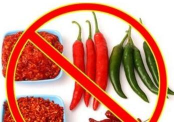

中医一直强调辨症施治，对症下药，可是现在绝大多数的医院都只是看症！也只剩下开药了！症治好了，病却越来越多。想想我们周围的人，哪个不是先从吃一片药开始，后来变成一大把？看看现在各地的医院，哪个医院不是人满为患？看病难、看病贵 成为需要全社会共同面对的一个问题。
大家一定要改变一些错误的认识，不要老认为药是
前面我们谈过病症，辨症施治、对症下药和对病调理的话题。下面，我要跟大家讲两个病例，看看中医是怎么看病，怎么辨症施治的。
我有一个病人，60多岁，男性，得了高血压。他知道吃降压药的危害，他不敢吃。他那
大家想想，舌头不会动了，怎么把这饭咀嚼烂了？吃不好是不是咽不下去？肺在下面，胃在后面，是不是咽不好就呛到肺里去了？所以他吃饭的时候特别可怕，他一吃饭，就和医院预约随时准备抢救。但是通过我们的食疗，持续了将近四个月的时间，他的舌头能动了，吃饭的难题彻底解决了，血压也逐渐正常了。
还有一个病例，是一个老爷子，当年我接诊这个病人的时候，他已经79岁了。这个病人长期服用降压药，最后脑梗了。这次是第四次发作了，在临床上一般第四次发作就不治了。当时老爷子是半昏迷状态，体温不断升高，医生告诉他的家属，放弃治疗吧，别让老爷子受罪了，没有别的招了。后来他的闺女不死心，找到了我。我到了病房，一摸老爷子的脉，不是死脉！因为他的吞咽能力还有，我的
我让他们把
可以说，这些都是吃降压药带来的副作用。您瞧现在有这么多高血压患者，到了医院，先给您吃降压药，然后给您吃心脏病的药。这两个药同一个作用，都是扩张血管的，我问您，您那个血管不崩等什么呢？所以高血压的人至少得吃这两种药。而且药量得慢慢往上加，越吃药越多，副作用也就越来越多。
长期吃降压药的男同志，有几个前列腺不肥大的？降压药是扩张血管的，到前列腺扩不扩？肯定扩嘛！又得吃治 前列腺病的药，这就多了一种药了，女同志吃降压药的，有几个不尿滴漏的，都不敢走远路，说尿就尿了，多
如何不吃、少吃降压药，我告诉大家一个 四字方针的食疗方案。我们说了，西医把血压高叫肾源性高血压，但是它没有治肾，光吃降压药了，这就是所谓的 对症下药！所以血压高的人终身服药，原因就在这里。中医对血压高怎么定位？叫心肾不和，肝火太旺。大家记住，我总结出来的治疗保健的方针，就是 清、调、补、养四个字。
清，清什么？刚才讲了，中医认为血压高的原因就是心肾不和，肝火太大，所以得先清肝。肝吃什么？绿色的。结合咱们营养学，就是生吃蔬菜。蔬菜里头哪个降肝火最棒？就是
怎么把血管里的瘀血化开？怎么把血脂赶紧降下来？吃什么？吃 茄子！市场上有两种茄子，一个圆的，一个长的。通过我多年亲自做的对比实验， 长条茄子 效果是最好的。怎么吃？ 生吃！为什么吃茄子呢？大家应该都做过烧茄子这道菜，都知道做烧茄子是不是搁油特多，最后油都没了，都让茄子给吸走了，我们要是生吃茄子，我们血液里的油是不是慢慢下来了？血粘稠是不是慢慢下来了？血脂是不是慢慢下来了？我们血管里瘀结是不是慢慢化开了？
在一天三餐中什么时候吃最好？晚上吃是最好的！为什么？肝是夜里代谢，肝是代谢脂肪的。所以我们晚饭吃生拌长条茄子效果是最好的。吃法很简单，把这柿子椒和茄子都洗干净了，别削皮了，给它切成丝、切成片，搁点儿麻酱、醋、盐一拌，我们每天晚上多吃这些生拌菜。在饮食中，这是食 。
饮，饮什么呢？刚才讲了，血压高就是肝火太大，我们白天多喝一些泻肝火的水。这水怎么做呢？
肉类适宜在早晨、中午吃，晚上千万不要再吃油和肉。所以我讲的饮食法则要荤素搭配，我也讲了，想吃什么吃什么，想吃肉就吃，关键在于您要会吃！什么叫会吃？就是早晨、中午吃，晚上不要再吃了。
清、调完了之后就是补，补什么？一定要把钙补上。
钙是干嘛的？大家都知道，如果抽筋，一吃钙就不抽了。钙是缓解血管痉挛的。血压高，就是血管痉挛，所以要补钙，把血管痉挛的程度缓解下来，血压随之慢慢不就下来了吗？可以这么说，钙是降血压的。补多少呢？女同志每天不能低于3000毫克，男同志每天不能低于4000毫克，分三次吃。
最后还要注意忌口。
第一个：牛奶。 这里为什么我不让喝牛奶？我指的是高血压病人，不要喝牛奶。一杯牛奶强壮了一个民族，这句话说得非常对！但是作为我们来讲，应该思考一下，强壮一个什么民族？那个民族是吃不饱、喝不好，喝杯牛奶可不是强壮了吗？现在我们国家几亿人已经衣食无忧、
这道食谱开完了，从您开始吃的那天起，一个
除了食疗之外，还有一些辅助方案。每天晚上用热水泡脚，在泡脚前，在背上走走罐。走罐儿 其实很简单！大家都知道 拔罐，走罐儿与拔罐儿的不同之处是在后背上抹油，把罐拔住以后，拉着罐儿在后背上来回走。目的是什么？咱们老百姓很多人都知道走罐儿是干嘛的泻火！高血压是不是肝火旺？对啊！走罐儿把火泻下来，不就行了吗？每天走罐儿，走完罐泡泡脚，把汗发出来。目的是把您的热散出来，里面的压力小了，大家想一想血压是不是慢慢自然地就下来了？
我这么多年用饮食调治的高血压病人，绝大部分人最后把药都减没了。并且血压一直都很正常，彻底告别了这个病。也就是我们老说的，一定要用生活去改变生命，千万别用生命改变生活！